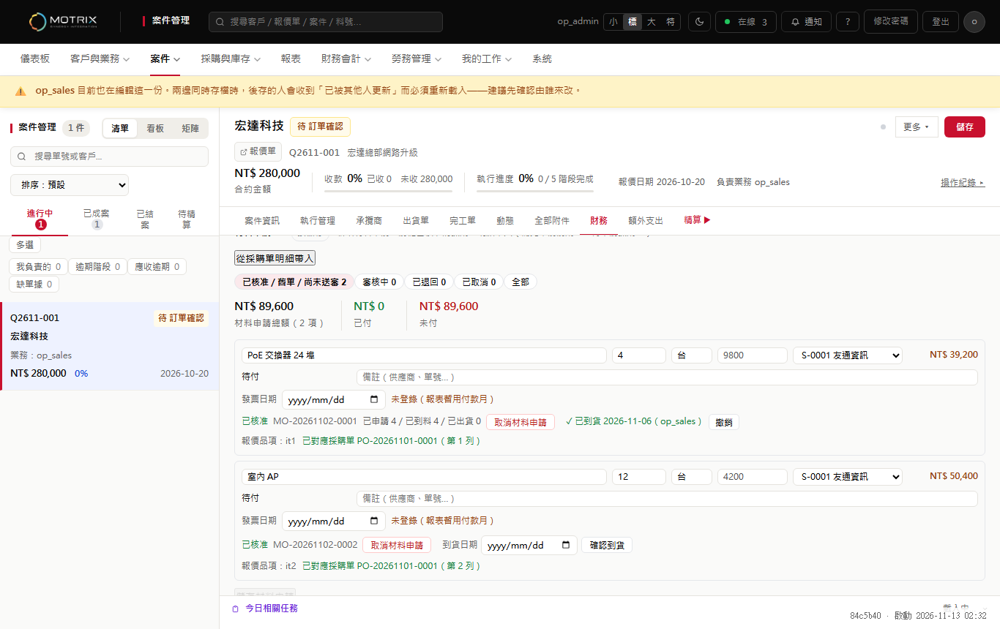
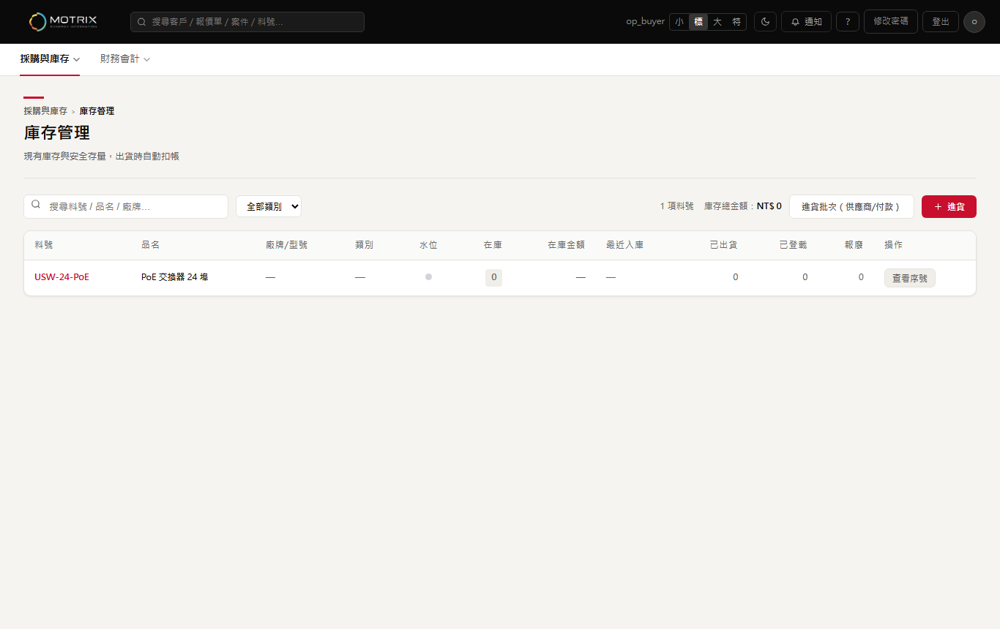
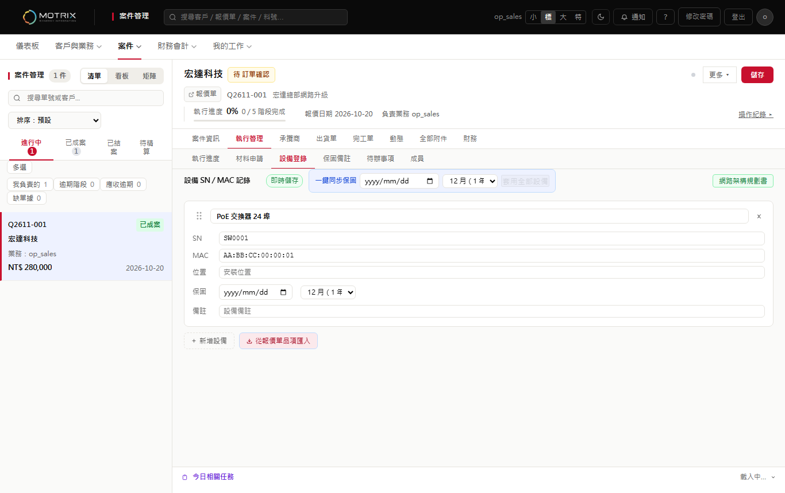

三個畫面草圖（非最終設計）。左：現況（真實截圖，假資料）；右：提案示意。對應提案書 PROCUREMENT-FLOW-ONEPIPE-PROPOSAL.md 第四節。
情境：業務／採購想知道「宏達總部網路升級」的料到哪了、下一步誰做。

物料流程 · 3 個品項 · 共 22 件
| 品項 | 需要 | 叫料 | 採購 | 到貨 | 入庫 | 出貨 | 登載 | |
|---|---|---|---|---|---|---|---|---|
| PoE 交換器 24 埠 | 4 | 4 | 4 | 4 | 0 | 0 | 1 | 入庫 |
| 室內 AP | 12 | 12 | 12 | 0 | 0 | 0 | 0 | 到貨 |
| CAT6 網路線 | 6 | — | — | — | — | — | — | 叫料 |
右側：最近登載（工作日誌、階段出勤、動態）；沒有權限的段落整段不顯示。
情境：4 台 PoE 交換器到了。現況要在三個地方各打一次；提案是一張單完成。

已辨識 4 / 4 筆 · 重複序號 0
確認（寫入 到貨＋入庫＋設備 4 台） 取消
情境：交換器出貨給客戶之後，現場要登載設備、系統要開始算保固。

| 設備 | 序號 | MAC | 保固起始 | 月數 |
|---|---|---|---|---|
| PoE 交換器 24 埠 | SW0001 | …:01 | 2026-11-10 | 12 |
| PoE 交換器 24 埠 | SW0002 | …:02 | 2026-11-10 | 12 |
| PoE 交換器 24 埠 | SW0003 | …:03 | 2026-11-10 | 12 |
| PoE 交換器 24 埠 | SW0004 | …:04 | 2026-11-10 | 12 |
登載為設備（4 台） 保固起始日預設＝出貨日（設定中心可改為完工日）
篩選：宏達總部網路升級（案號可點） · 含已結案案件
2027-11-10 到期 4 台 到期前 30／7 天提醒以上為示意；實際用語會依 hichan-7 的禁用詞清單與設定中心用語調整。